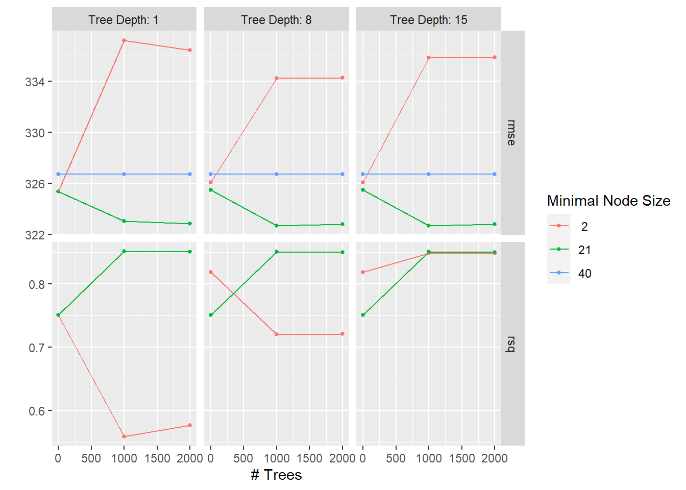

knitr::read_chunk('booststatistical_analysis.R')Boosted Tree Statistical Analysis
Processing script with R script code
This Quarto file runs the statistical analysis code from the booststatistical_analysis.r script. The best way to view the output of the script is to render the qmd and view the html document. The processed data is used for model fitting.
Note: this file takes approximately 15 minutes to render
To start, the needed packages are loaded, and the processeddata.rda is loaded from the processed_data folder.
Setup
The statistical_analysis.r script needs to be indicated as the file from which to pull code chunks from.
Load packages and data
The packages and data are loaded.
#load needed packages
library(here)
library(tidymodels)
library(tidyverse)
library(ggplot2)
library(bonsai)#path to data
data_location <- here::here("data","processed_data","processeddata.rda")
#load data.
load(data_location)Model fitting
In addition to the decision tree modelling found in statistical_analysis.qmd file, I wanted to also look at boosted tree models. First, we will split the data like in the decision tree models.
#split data into training and test sets for wide_data
obbdatasplit <- initial_split(obmodel, prop = 3/4)
obbtest_data <- testing(obbdatasplit)
obbtrain_data <- training(obbdatasplit)
#set seed for reproducibility
set.seed(626)
#create cross-validation folds
obbfolds <- vfold_cv(obbtrain_data, v = 5)
#split data into training and test sets for highburden
hbbdatasplit <- initial_split(hbmodel, prop = 3/4)
hbbtest_data <- testing(hbbdatasplit)
hbbtrain_data <- training(hbbdatasplit)
#set seed for reproducibility
set.seed(626)
#create cross-validation folds
hbbfolds <- vfold_cv(hbbtrain_data, v = 5)
#split data into training and test sets for other burden prevalence
obbprevsplit <- initial_split(obmodelprev, prop = 3/4)
obbprevtest_data <- testing(obbprevsplit)
obbprevtrain_data <- training(obbprevsplit)
#set seed for reproducibility
set.seed(626)
#create cross-validation folds
obbprevfolds <- vfold_cv(obbprevtrain_data, v = 5)
#split data into training and test sets for high burden prevalence
hbbprevsplit <- initial_split(hbmodelprev, prop = 3/4)
hbbprevtest_data <- testing(hbbprevsplit)
hbbprevtrain_data <- training(hbbprevsplit)
#set seed for reproducibility
set.seed(626)
#create cross-validation folds
hbbprevfolds <- vfold_cv(hbbprevtrain_data, v = 5)I will be tuning boosted tree models for the main outcomes of TB incidence, TB mortality, and TB prevalence for both high burden countries and the full data set. To make it more clear when saving the resulting tables and plots, the other burden country boosted tree results will be labeled obb and high burden as hbb.
Boosted tree model for TB Incidence
#recipe predicting TB incidence
increcipe <- recipe(`TB incidence (new infections per 100 000 population)` ~.,
data = obbtrain_data)
#create tree model
treemodel <- boost_tree(trees = tune(),
tree_depth = tune(),
min_n = tune()) %>%
set_engine("lightgbm") %>%
set_mode("regression")
#create work flow
incwflow <- workflow() %>%
add_model(treemodel) %>%
add_recipe(increcipe)
#create grid of tuning parameters
tree_grid <- grid_regular(tree_depth(),
trees(),
min_n())
#set seed for reproducibility
set.seed(626)
#resample using cross-validation folds to tune parameters
inctree_resamp <- incwflow %>%
tune_grid(
resamples = obbfolds,
grid = tree_grid,
control = control_grid(save_pred = TRUE)
)Warning: package 'lightgbm' was built under R version 4.2.3! Fold1: internal: A correlation computation is required, but `estimate` is constant and ha...#plot resampling by parameters
inctreeplot <- inctree_resamp %>% autoplot()
inctreeplottreeplot1 = here("results", "statistical_analysis", "tune plots", "obbinctreeplot.rds")
saveRDS(inctreeplot, file = treeplot1)
#show the best model
inctree_resamp %>%
show_best()Warning: No value of `metric` was given; metric 'rmse' will be used.# A tibble: 5 × 9
trees min_n tree_depth .metric .estimator mean n std_err .config
<int> <int> <int> <chr> <chr> <dbl> <int> <dbl> <chr>
1 1000 2 1 rmse standard 37.3 5 6.08 Preprocessor1_M…
2 2000 2 15 rmse standard 37.7 5 9.49 Preprocessor1_M…
3 1000 2 15 rmse standard 37.7 5 9.49 Preprocessor1_M…
4 2000 2 8 rmse standard 37.8 5 9.45 Preprocessor1_M…
5 1000 2 8 rmse standard 37.8 5 9.45 Preprocessor1_M…#select best model
obbincbest_tree <- inctree_resamp %>% select_best("rmse")
#create final workflow
obbincfinal_wf <- incwflow %>% finalize_workflow(obbincbest_tree)
#fit the final workflow to the training data
obbincfinal_fit <- obbincfinal_wf %>% fit(obbtrain_data)
#find RMSE for model with training data
obbincfitted <- augment(obbincfinal_fit, obbtrain_data)
#save for later comparison: RMSE based on predictions from best model
obbinc_rmse <- inctree_resamp %>%
collect_predictions(parameters = obbincbest_tree) %>%
rmse(`TB incidence (new infections per 100 000 population)`, .pred) %>%
mutate(model = "obbinc")
obbinc_rmse# A tibble: 1 × 4
.metric .estimator .estimate model
<chr> <chr> <dbl> <chr>
1 rmse standard 39.2 obbinc#fit final workflow to test data
obbincfittest <- obbincfinal_fit %>% last_fit(obbdatasplit)
#find RMSE for model with test data
obbincfittest %>% collect_metrics()# A tibble: 2 × 4
.metric .estimator .estimate .config
<chr> <chr> <dbl> <chr>
1 rmse standard 48.7 Preprocessor1_Model1
2 rsq standard 0.666 Preprocessor1_Model1#create residuals from predictions and outcome values
obbincfitted <- obbincfitted %>%
mutate(.resid = `TB incidence (new infections per 100 000 population)` - .pred)
#plot residuals and predictions
obbincresidplot <- obbincfitted %>% ggplot(aes(.pred, .resid))+
geom_point()+
geom_hline(yintercept = 0)+
labs(title = "Other Burden Incidence Residuals")
obbincresidplot
The best boosted tree model for TB incidence using the other burden countries has a depth of 15 with an RMSE of 48 (SE = 4.81). This is slightly better than the decision tree model (RMSE of 51.6). The fitted model to the training data has a RMSE of 49.0, and since the model performs better than the decision tree, we can fit the test data as well. Using the testing data, the model had a performance of RMSE = 37.1. This would indicate the model would perform similar on new data (compared to the training data). The residual plot shows clustering in the low prediction values with high residuals for 0-100 predictions.
#recipe predicting TB incidence
increcipe <- recipe(`TB incidence (new infections per 100 000 population)` ~.,
data = hbbtrain_data)
#recipe predicting TB incidence
increcipe <- recipe(`TB incidence (new infections per 100 000 population)` ~.,
data = hbbtrain_data)
#create tree model
treemodel <- boost_tree(trees = tune(),
tree_depth = tune(),
min_n = tune()) %>%
set_engine("lightgbm") %>%
set_mode("regression")
#create work flow
incwflow <- workflow() %>%
add_model(treemodel) %>%
add_recipe(increcipe)
#create grid of tuning parameters
tree_grid <- grid_regular(tree_depth(),
trees(),
min_n())
#set seed for reproducibility
set.seed(626)
#resample using cross-validation folds to tune parameters
inctree_resamp <- incwflow %>%
tune_grid(
resamples = hbbfolds,
grid = tree_grid,
control = control_grid(save_pred = TRUE)
)! Fold1: internal: A correlation computation is required, but `estimate` is constant and ha...! Fold2: internal: A correlation computation is required, but `estimate` is constant and ha...! Fold3: internal: A correlation computation is required, but `estimate` is constant and ha...! Fold4: internal: A correlation computation is required, but `estimate` is constant and ha...! Fold5: internal: A correlation computation is required, but `estimate` is constant and ha...#plot resampling by parameters
inctreeplot <- inctree_resamp %>% autoplot()
inctreeplottreeplot2 = here("results", "statistical_analysis", "tune plots", "hbbinctreeplot.rds")
saveRDS(inctreeplot, file = treeplot2)
#show the best model
inctree_resamp %>%
show_best()Warning: No value of `metric` was given; metric 'rmse' will be used.# A tibble: 5 × 9
trees min_n tree_depth .metric .estimator mean n std_err .config
<int> <int> <int> <chr> <chr> <dbl> <int> <dbl> <chr>
1 1000 2 8 rmse standard 134. 5 8.00 Preprocessor1_M…
2 2000 2 8 rmse standard 134. 5 8.00 Preprocessor1_M…
3 1000 2 15 rmse standard 136. 5 11.6 Preprocessor1_M…
4 2000 2 15 rmse standard 136. 5 11.6 Preprocessor1_M…
5 1000 2 1 rmse standard 142. 5 10.3 Preprocessor1_M…#select best model
hbbincbest_tree <- inctree_resamp %>% select_best("rmse")
#create final workflow
hbbincfinal_wf <- incwflow %>% finalize_workflow(hbbincbest_tree)
#fit the final workflow to the training data
hbbincfinal_fit <- hbbincfinal_wf %>% fit(hbbtrain_data)
#find RMSE for model with training data
hbbincfitted <- augment(hbbincfinal_fit, hbbtrain_data)
#fit final workflow to test data
hbbincfittest <- hbbincfinal_fit %>% last_fit(hbbdatasplit)
#find RMSE for model with test data
hbbincfittest %>% collect_metrics()# A tibble: 2 × 4
.metric .estimator .estimate .config
<chr> <chr> <dbl> <chr>
1 rmse standard 92.4 Preprocessor1_Model1
2 rsq standard 0.753 Preprocessor1_Model1#save for later comparison
hbbinc_rmse <- inctree_resamp %>%
collect_predictions(parameters = hbbincbest_tree) %>%
rmse(`TB incidence (new infections per 100 000 population)`, .pred) %>%
mutate(model = "hbbinc")
hbbinc_rmse# A tibble: 1 × 4
.metric .estimator .estimate model
<chr> <chr> <dbl> <chr>
1 rmse standard 136. hbbinc#create residuals from predictions and outcome values
hbbincfitted <- hbbincfitted %>%
mutate(.resid = `TB incidence (new infections per 100 000 population)` - .pred)
#plot residuals and predictions
hbbincresidplot <- hbbincfitted %>% ggplot(aes(.pred, .resid))+
geom_point()+
geom_hline(yintercept = 0)+
labs(title = "High Burden Incidence Residuals")
hbbincresidplotThe best boosted tree model for TB incidence using the high burden countries has a depth of 8 with an RMSE of 134 (SE = 8). This is also a low level of performance in predicting TB incidence but slightly improved from the decision trees (RMSE of 159. The fitted model to the training data has a RMSE of 136 which was much higher compared to the full dataset. Using the testing data, the model had a performance of RMSE = 92.4. The residual plot shows clustering for low values but very low residuals for all values.
Boosted tree model for TB Mortality
#recipe predicting TB mortality
mortrecipe <- recipe(`TB mortality (deaths per 100 000 population)` ~.,
data = obbtrain_data)
#create workflow
mortwflow <- workflow() %>%
add_model(treemodel) %>%
add_recipe(mortrecipe)
#set seed for reproducibility
set.seed(626)
#resample using cross-validation folds to tune parameters
morttree_resamp <- mortwflow %>%
tune_grid(
resamples = obbfolds,
grid = tree_grid,
control = control_grid(save_pred = TRUE)
)! Fold1: internal: A correlation computation is required, but `estimate` is constant and ha...! Fold2: internal: A correlation computation is required, but `estimate` is constant and ha...#plot resampling by parameters
morttreeplot <- morttree_resamp %>% autoplot()
morttreeplottreeplot3 = here("results", "statistical_analysis", "tune plots", "obbmorttreeplot.rds")
saveRDS(morttreeplot, file = treeplot3)
#show the best model
morttree_resamp %>%
show_best()Warning: No value of `metric` was given; metric 'rmse' will be used.# A tibble: 5 × 9
trees min_n tree_depth .metric .estimator mean n std_err .config
<int> <int> <int> <chr> <chr> <dbl> <int> <dbl> <chr>
1 1000 2 8 rmse standard 8.47 5 3.09 Preprocessor1_M…
2 2000 2 8 rmse standard 8.47 5 3.09 Preprocessor1_M…
3 1000 2 15 rmse standard 8.48 5 3.09 Preprocessor1_M…
4 2000 2 15 rmse standard 8.48 5 3.09 Preprocessor1_M…
5 1000 2 1 rmse standard 9.22 5 2.58 Preprocessor1_M…#select best model
obbmortbest_tree <- morttree_resamp %>% select_best("rmse")
#create final workflow
obbmortfinal_wf <- mortwflow %>% finalize_workflow(obbmortbest_tree)
#fit the final workflow to the training data
obbmortfinal_fit <- obbmortfinal_wf %>% fit(obbtrain_data)
#find RMSE for model with training data
obbmortfitted <- augment(obbmortfinal_fit, obbtrain_data)
#save for later comparison: RMSE based on predictions from best model
obbmort_rmse <- morttree_resamp %>%
collect_predictions(parameters = obbmortbest_tree) %>%
rmse(`TB mortality (deaths per 100 000 population)`, .pred) %>%
mutate(model = "obbmort")
obbmort_rmse# A tibble: 1 × 4
.metric .estimator .estimate model
<chr> <chr> <dbl> <chr>
1 rmse standard 10.5 obbmort#fit final workflow to test data
obbmortfittest <- obbmortfinal_fit %>% last_fit(obbdatasplit)
#find RMSE for model with test data
obbmortfittest %>% collect_metrics()# A tibble: 2 × 4
.metric .estimator .estimate .config
<chr> <chr> <dbl> <chr>
1 rmse standard 10.0 Preprocessor1_Model1
2 rsq standard 0.711 Preprocessor1_Model1#create residuals from predictions and outcome values
obbmortfitted <- obbmortfitted %>%
mutate(.resid = `TB mortality (deaths per 100 000 population)` - .pred)
#plot residuals and predictions
obbmortresidplot <- obbmortfitted %>% ggplot(aes(.pred, .resid))+
geom_point()+
geom_hline(yintercept = 0)+
labs(title = "Other Burden Mortality Residuals")
obbmortresidplotThe best boosted tree model for TB mortality using the other burden countries has a depth of 1 with an RMSE of 9.08 (SE = 1.49). The fitted model to the training data has a RMSE of 8.66, and using the testing data, the model had a performance of RMSE = 6.34. The residual plot shows clustering in low values and moderate spread.
#recipe predicting TB mortality
mortrecipe <- recipe(`TB mortality (deaths per 100 000 population)` ~.,
data = hbbtrain_data)
#create workflow
mortwflow <- workflow() %>%
add_model(treemodel) %>%
add_recipe(mortrecipe)
#set seed for reproducibility
set.seed(626)
#resample using cross-validation folds to tune parameters
morttree_resamp <- mortwflow %>%
tune_grid(
resamples = hbbfolds,
grid = tree_grid,
control = control_grid(save_pred = TRUE)
)! Fold1: internal: A correlation computation is required, but `estimate` is constant and ha...! Fold2: internal: A correlation computation is required, but `estimate` is constant and ha...! Fold3: internal: A correlation computation is required, but `estimate` is constant and ha...! Fold4: internal: A correlation computation is required, but `estimate` is constant and ha...! Fold5: internal: A correlation computation is required, but `estimate` is constant and ha...#plot resampling by parameters
morttreeplot <- morttree_resamp %>% autoplot()
morttreeplottreeplot3 = here("results", "statistical_analysis", "tune plots", "hbbmorttreeplot.rds")
saveRDS(morttreeplot, file = treeplot3)
#show the best model
morttree_resamp %>%
show_best()Warning: No value of `metric` was given; metric 'rmse' will be used.# A tibble: 5 × 9
trees min_n tree_depth .metric .estimator mean n std_err .config
<int> <int> <int> <chr> <chr> <dbl> <int> <dbl> <chr>
1 2000 2 15 rmse standard 18.2 5 1.74 Preprocessor1_M…
2 1000 2 15 rmse standard 18.2 5 1.74 Preprocessor1_M…
3 2000 2 8 rmse standard 18.2 5 1.59 Preprocessor1_M…
4 1000 2 8 rmse standard 18.2 5 1.59 Preprocessor1_M…
5 2000 21 1 rmse standard 18.4 5 1.92 Preprocessor1_M…#select best model
hbbmortbest_tree <- morttree_resamp %>% select_best("rmse")
#create final workflow
hbbmortfinal_wf <- mortwflow %>% finalize_workflow(hbbmortbest_tree)
#fit the final workflow to the training data
hbbmortfinal_fit <- hbbmortfinal_wf %>% fit(hbbtrain_data)
#find RMSE for model with training data
hbbmortfitted <- augment(hbbmortfinal_fit, hbbtrain_data)
#save for later comparison: RMSE based on predictions from best model
hbbmort_rmse <- morttree_resamp %>%
collect_predictions(parameters = hbbmortbest_tree) %>%
rmse(`TB mortality (deaths per 100 000 population)`, .pred) %>%
mutate(model = "hbbmort")
hbbmort_rmse# A tibble: 1 × 4
.metric .estimator .estimate model
<chr> <chr> <dbl> <chr>
1 rmse standard 18.5 hbbmort#fit final workflow to test data
hbbmortfittest <- hbbmortfinal_fit %>% last_fit(hbbdatasplit)
#find RMSE for model with test data
hbbmortfittest %>% collect_metrics()# A tibble: 2 × 4
.metric .estimator .estimate .config
<chr> <chr> <dbl> <chr>
1 rmse standard 11.1 Preprocessor1_Model1
2 rsq standard 0.833 Preprocessor1_Model1#create residuals from predictions and outcome values
hbbmortfitted <- hbbmortfitted %>%
mutate(.resid = `TB mortality (deaths per 100 000 population)` - .pred)
#plot residuals and predictions
hbbmortresidplot <- hbbmortfitted %>% ggplot(aes(.pred, .resid))+
geom_point()+
geom_hline(yintercept = 0)+
labs(title = "High Burden Mortality Residuals")
hbbmortresidplotThe best boosted tree model for TB mortality using the high burden countries has a depth of 15 with an RMSE of 18.2 (SE = 1.74). The fitted model to the training data has a RMSE of 18.5. Using the testing data, the model had a performance of RMSE = 11.1. The residual plot shows a uniform spread with low low residual values.
Boosted tree model for TB Prevalence
#recipe predicting TB prevalence
prevrecipe <- recipe(`TB prevalence (cases per 100 000 population)` ~.,
data = obbprevtrain_data)
#create workflow
prevwflow <- workflow() %>%
add_model(treemodel) %>%
add_recipe(prevrecipe)
#set seed for reproducibility
set.seed(626)
#resample using cross-validation folds to tune parameters
prevtree_resamp <- prevwflow %>%
tune_grid(
resamples = obbprevfolds,
grid = tree_grid,
control = control_grid(save_pred = TRUE)
)! Fold1: internal: A correlation computation is required, but the inputs are size zero or o...! Fold2: internal: A correlation computation is required, but `estimate` is constant and ha...! Fold3: internal: A correlation computation is required, but `estimate` is constant and ha...! Fold4: internal: A correlation computation is required, but the inputs are size zero or o...! Fold5: internal: A correlation computation is required, but `estimate` is constant and ha...#plot resampling by parameters
prevtreeplot <- prevtree_resamp %>% autoplot()
prevtreeplot
treeplot5 = here("results", "statistical_analysis", "tune plots", "obbprevtreeplot.rds")
saveRDS(prevtreeplot, file = treeplot5)
#show the best model
prevtree_resamp %>%
show_best()Warning: No value of `metric` was given; metric 'rmse' will be used.# A tibble: 5 × 9
trees min_n tree_depth .metric .estimator mean n std_err .config
<int> <int> <int> <chr> <chr> <dbl> <int> <dbl> <chr>
1 1000 21 8 rmse standard 323. 4 130. Preprocessor1_M…
2 1000 21 15 rmse standard 323. 4 130. Preprocessor1_M…
3 2000 21 8 rmse standard 323. 4 130. Preprocessor1_M…
4 2000 21 15 rmse standard 323. 4 130. Preprocessor1_M…
5 2000 21 1 rmse standard 323. 4 130. Preprocessor1_M…#select best model
obbprevbest_tree <- prevtree_resamp %>% select_best("rmse")
#create final workflow
obbprevfinal_wf <- prevwflow %>% finalize_workflow(obbprevbest_tree)
#fit the final workflow to the training data
obbprevfinal_fit <- obbprevfinal_wf %>% fit(obbprevtrain_data)
#find RMSE for model with training data
obbprevfitted <- augment(obbprevfinal_fit, obbprevtrain_data)
#save for later comparison: RMSE based on predictions from best model
obbprev_rmse <- prevtree_resamp %>%
collect_predictions(parameters = obbprevbest_tree) %>%
rmse(`TB prevalence (cases per 100 000 population)`, .pred) %>%
mutate(model = "obbprev")
obbprev_rmse# A tibble: 1 × 4
.metric .estimator .estimate model
<chr> <chr> <dbl> <chr>
1 rmse standard 450. obbprev#fit final workflow to test data
obbprevfittest <- obbprevfinal_fit %>% last_fit(obbprevsplit)! train/test split: internal: A correlation computation is required, but the inputs are size zero or o...#find RMSE for model with test data
obbprevfittest %>% collect_metrics()# A tibble: 2 × 4
.metric .estimator .estimate .config
<chr> <chr> <dbl> <chr>
1 rmse standard 257. Preprocessor1_Model1
2 rsq standard NA Preprocessor1_Model1#create residuals from predictions and outcome values
obbprevfitted <- obbprevfitted %>%
mutate(.resid = `TB prevalence (cases per 100 000 population)` - .pred)
#plot residuals and predictions
obbprevresidplot <- obbprevfitted %>% ggplot(aes(.pred, .resid))+
geom_point()+
geom_hline(yintercept = 0)+
labs(title = "Other Burden Prevalence Residuals")
obbprevresidplotWarning: Removed 72 rows containing missing values (`geom_point()`).The best boosted tree model for TB prevalence using the other burden countries has a depth of 8 with an RMSE of 323 (SE = 130). This is a very low level of performance in predicting TB prevalence with high uncertainty. The fitted model to the training data has a RMSE of 450 which is much worse compared to the decision tree models. For comparison since the other boosted tree models all preformed better than the decision trees, I will still fit the testing data to the boosted tree models. Using the testing data, the model had a performance of RMSE = 257. The residual plot shows only positive residuals (indicating the actual values were far greater than the predictions).
#recipe predicting TB prevalence
prevrecipe <- recipe(`TB prevalence (cases per 100 000 population)` ~.,
data = hbbprevtrain_data)
#create workflow
prevwflow <- workflow() %>%
add_model(treemodel) %>%
add_recipe(prevrecipe)
#set seed for reproducibility
set.seed(626)
#resample using cross-validation folds to tune parameters
prevtree_resamp <- prevwflow %>%
tune_grid(
resamples = hbbprevfolds,
grid = tree_grid,
control = control_grid(save_pred = TRUE)
)! Fold1: internal: A correlation computation is required, but `estimate` is constant and ha...! Fold2: internal: A correlation computation is required, but `estimate` is constant and ha...! Fold3: internal: A correlation computation is required, but `estimate` is constant and ha...! Fold4: internal: A correlation computation is required, but `estimate` is constant and ha...! Fold5: internal: A correlation computation is required, but `estimate` is constant and ha...#plot resampling by parameters
prevtreeplot <- prevtree_resamp %>% autoplot()
prevtreeplottreeplot6 = here("results", "statistical_analysis", "tune plots", "hbbprevtreeplot.rds")
saveRDS(prevtreeplot, file = treeplot6)
#show the best model
prevtree_resamp %>%
show_best()Warning: No value of `metric` was given; metric 'rmse' will be used.# A tibble: 5 × 9
trees min_n tree_depth .metric .estimator mean n std_err .config
<int> <int> <int> <chr> <chr> <dbl> <int> <dbl> <chr>
1 1000 2 1 rmse standard 322. 5 58.9 Preprocessor1_M…
2 1000 21 1 rmse standard 331. 5 57.8 Preprocessor1_M…
3 1000 21 8 rmse standard 331. 5 57.8 Preprocessor1_M…
4 1000 21 15 rmse standard 331. 5 57.8 Preprocessor1_M…
5 2000 21 1 rmse standard 331. 5 57.4 Preprocessor1_M…#select best model
hbbprevbest_tree <- prevtree_resamp %>% select_best("rmse")
#create final workflow
hbbprevfinal_wf <- prevwflow %>% finalize_workflow(hbbprevbest_tree)
#fit the final workflow to the training data
hbbprevfinal_fit <- hbbprevfinal_wf %>% fit(hbbprevtrain_data)
#find RMSE for model with training data
hbbprevfitted <- augment(hbbprevfinal_fit, hbbprevtrain_data)
#save for later comparison: RMSE based on predictions from best model
hbbprev_rmse <- prevtree_resamp %>%
collect_predictions(parameters = hbbprevbest_tree) %>%
rmse(`TB prevalence (cases per 100 000 population)`, .pred) %>%
mutate(model = "hbbprev")
hbbprev_rmse# A tibble: 1 × 4
.metric .estimator .estimate model
<chr> <chr> <dbl> <chr>
1 rmse standard 351. hbbprev#fit final workflow to test data
hbbprevfittest <- hbbprevfinal_fit %>% last_fit(hbbprevsplit)
#find RMSE for model with test data
hbbprevfittest %>% collect_metrics()# A tibble: 2 × 4
.metric .estimator .estimate .config
<chr> <chr> <dbl> <chr>
1 rmse standard 448. Preprocessor1_Model1
2 rsq standard 0.129 Preprocessor1_Model1#create residuals from predictions and outcome values
hbbprevfitted <- hbbprevfitted %>%
mutate(.resid = `TB prevalence (cases per 100 000 population)` - .pred)
#plot residuals and predictions
hbbprevresidplot <- hbbprevfitted %>% ggplot(aes(.pred, .resid))+
geom_point()+
geom_hline(yintercept = 0)+
labs(title = "High Burden Prevalence Residuals")
hbbprevresidplotWarning: Removed 43 rows containing missing values (`geom_point()`).The best boosted tree model for TB prevalence using the high burden countries has a depth of 1 with an RMSE of 322 (SE = 58.9). This is a very low level of performance in predicting TB incidence but has less uncertainty than the other burden model. The fitted model to the training data has a RMSE of 351, but using the testing data, the model had a performance of RMSE = 448 which is the worst performance of the models. The residual plot still is mostly high value, positive residuals but is slightly better than the other model.
Summary
#create summary table of RMSE for the models
comparebt <- bind_rows(obbinc_rmse, hbbinc_rmse, obbmort_rmse, hbbmort_rmse, obbprev_rmse, hbbprev_rmse)
comparebt# A tibble: 6 × 4
.metric .estimator .estimate model
<chr> <chr> <dbl> <chr>
1 rmse standard 39.2 obbinc
2 rmse standard 136. hbbinc
3 rmse standard 10.5 obbmort
4 rmse standard 18.5 hbbmort
5 rmse standard 450. obbprev
6 rmse standard 351. hbbprevtable_file1 = here("results", "statistical_analysis", "btsummaryrmse.rds")
saveRDS(comparebt, file = table_file1)The models were overall not subpar predictors of TB outcomes. TB prevalence was significantly different from the incidence and mortality models, possibly due to using different predictor variables or the limited availability of data points. The mortality models performed best based on RMSE values, and the other burden incidence and mortality models performed better than the high burden countries.